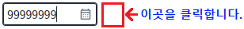
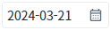
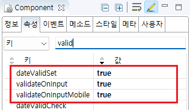

[InputCalendar] 유효하지 않은 값이 입력된 경우 직전 값으로 되돌리기
1개요
'InputCalendar'의 'dateValidSet' 속성을 사용하여, 입력 값이 유효한 날짜가 아닌 경우 직전 값으로 복원하는 예제입니다.
2구현된 기능
입력 값이 유효하지 않은 경우 직전 값으로 복원하기
3예제 테스트 방법
3.1입력 값이 유효하지 않은 경우 직전 값으로 복원하기
예제 영역 'dateValidSet 속성 적용'에서 테스트합니다.1
STEP 1: 초기 입력 값을 확인합니다.
InputCalendar의 초기 값을 확인합니다. 초기 값은 예제 파일이 실행된 날짜가 출력됩니다.
Image 1.브라우저(Chrome) 실행 예시

2
STEP 2: 유효하지 않은 날짜를 입력합니다.
InputCalenar에 "99999999"를 입력합니다.
Image 2.브라우저(Chrome) 실행 예시
3
STEP 3: 컴포넌트의 외부 영역을 클릭하여 커서를 제거합니다.
Image 3.브라우저(Chrome) 실행 예시

4
STEP 4: 실행 결과를 확인합니다.
입력 값이 직전 값으로 복원된 것을 확인합니다.
Image 4.브라우저(Chrome) 실행 예시

4구현 예시
4.1입력 값이 유효하지 않은 경우 직전 값으로 복원하기
1
InputCalendar의 속성을 정의합니다.
[필수] dateValidSet="true"
[default:false, true] 입력된 날짜 값의 유효성을 확인하여, 유효하지 않을 경우 이전 값으로 복귀.
[필수] validateOnInput="true"
[default:false, true] 값을 직접 입력할 때 숫자만 입력 허용. oninput 이벤트에서 처리.
[필수] validateOnInputMobile="true"
[default:false, true] 값을 직접 입력할 때 숫자만 입력 허용. 모바일 전용. onkeyup 이벤트에서 처리.
dateValidSet 속성 기능을 사용하기 위해 validateOnInput 속성과 validateOnInputMobile 속성을 필수로 지정해야 하는 것은 아닙니다.
예제 테스트를 위해 사용자가 숫자만 입력할 수 있도록, validateOnInput 속성과 validateOnInputMobile 속성을 설정하였습니다.
Image 5.웹스퀘어 스튜디오의 Component View - 속성 설정 예시

Example 1.Source
<!-- inputCalendar 의 소스 본문 예시 --> <w2:inputCalendar dateValidSet="true" validateOnInput="true" validateOnInputMobile="true" calendarValueType="yearMonthDate"> </w2:inputCalendar>
5주요 API
dateValidSet
validateOnInput
validateOnInputMobile